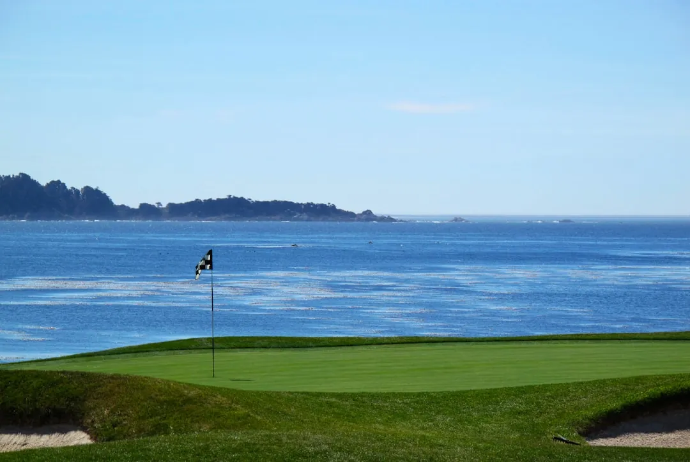
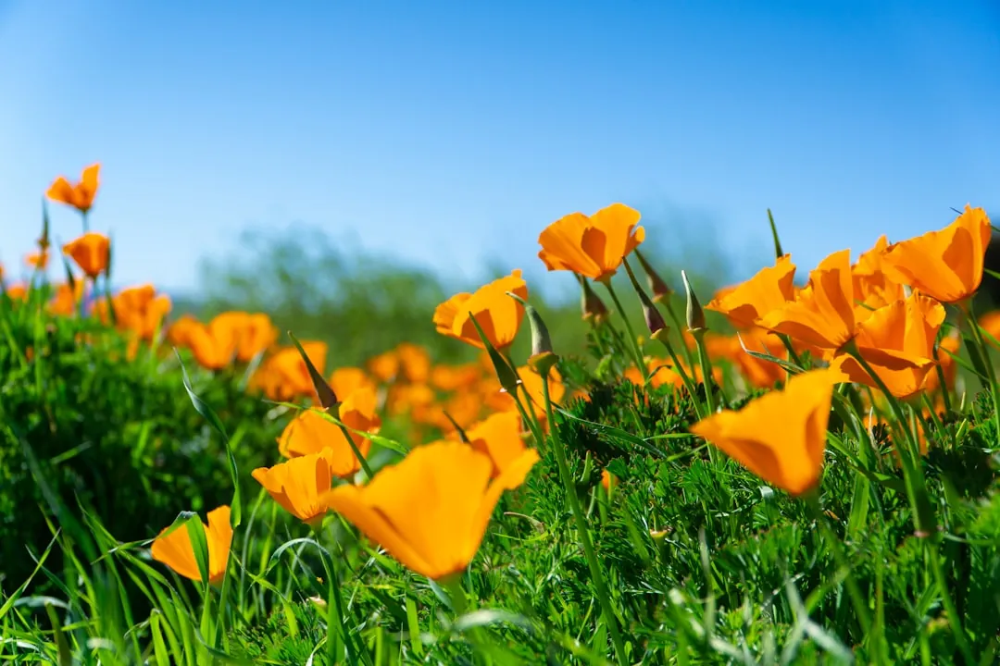

California golf costs by season
· By GoldenPath Guide Editorial Team
California golf prices move in opposite directions by region. Desert courses peak in winter when the weather is perfect, coastal courses peak in summer when the fog lifts, and shoulder months discount both. Time the trip to the season and the same courses cost far less with nearly the same weather. Exact green fees change yearly, so treat this guide as seasonal patterns and confirm current rates on official course pages.
The pattern to memorize: winter belongs to the desert at peak prices, summer belongs to the coast at peak prices, and spring and fall discount almost everything. Shoulder-season travelers get the best golf value in the state.
Winter: desert peak season
From December through March, Palm Springs and La Quinta run daily highs of 65 to 75 degrees with almost no rain, and snowbirds fill every fairway. This is the most expensive golf season in California: prime morning tee times at name courses sell out weeks ahead and twilight discounts shrink. Lodging matches, with resort rates at their yearly high and weekend minimums common.
Coastal courses invert in winter. Monterey highs sit in the upper 50s with regular rain and morning fog, and San Diego stays mild but cool near the water. Green fees soften, tee sheets open up, and a flexible golfer plays famous coastal courses with real availability. Winter coastal golf needs rain gear and patience, but the savings are genuine.
- Desert winter means book 3 to 6 weeks ahead for weekend mornings at name courses.
- Coastal winter means weekday mornings often book inside a single week.
- Desert mornings start near 45 degrees, so the 10 a.m. slot plays warmer than the 7 a.m. one for the same price.
- Rain checks on coastal courses typically cover unplayed holes; ask the pro shop policy before teeing off in showers.
Spring: the value window opens
April and May bring the best balance of the year. Desert highs climb into the 80s and low 90s, which thins crowds and starts the rate slide, while coastal courses warm into the 60s with less fog than winter. Tournament season ends with the spring events, freeing tee sheets at courses that close for professionals.
Overseed transitions happen in spring on many desert courses, when winter rye gives way to summer bermuda, and some courses close briefly for the changeover. Check maintenance calendars before booking desert rounds in April. Coastal courses hit stride in May, with firm conditions and long daylight pushing sunsets toward 8 p.m.
Summer: coastal peak, desert discount
June through August flips the map. Coastal courses from Monterey to San Diego run at their best and busiest, with highs in the 70s, minimal rain, and long evenings. These are the hardest coastal tee times of the year to get, and twilight stretches gloriously late with 8 p.m. sunsets. Book coastal summer golf as early as desert winter golf.

Desert courses discount steeply because afternoon highs pass 100 degrees regularly. Summer desert golf means sunrise starts, 5-hour heat limits, and clubhouse pools by noon. The discounts are large enough that budget travelers play top desert courses for less than half of winter rates, and early tee times finish before the worst heat.
Fall: the second value window
September through November may be the smartest season of all. Desert highs fall back through the 90s into the 80s, courses complete fall overseeding, and rates climb gradually rather than jumping. Coastal courses stay warm into October with thinning summer crowds. This shoulder produces the highest satisfaction per dollar across golfer surveys year after year.
Overseeding closes desert courses in rotation through October, typically 2 to 3 weeks per course, so verify each course status individually. A course just reopened from overseed plays lush and slow; a course about to close plays thin and fast. Both conditions are playable, but knowing which you booked removes the surprise. Call the pro shop the week before a fall desert trip and ask directly how the overseed schedule affects your dates. Staff answer this question daily and give straight answers, including which sister courses are in better shape that week. Both conditions are playable, but knowing which you booked removes the surprise.
How to time your trip
- Pick the region first: desert for winter warmth, coast for summer classics.
- Target April, May, September, or October for the best weather-to-price ratio.
- Check tournament calendars, since professional events close courses for 1 to 2 weeks around play.
- Check overseed and aeration calendars for desert and resort courses in spring and fall.
- Book the anchor round first at peak-season lead times, then fill shoulder rounds closer in.
Season decides the budget more than any coupon. Pick the right month and California golf costs less while playing better. Start with the month, then the region, then the course, and the prices line up behind those three choices. Golfers who plan in that order rarely overpay, and they almost always play in better weather than the ones who picked the course first.